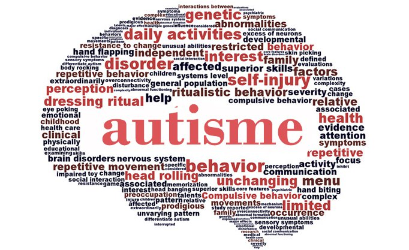
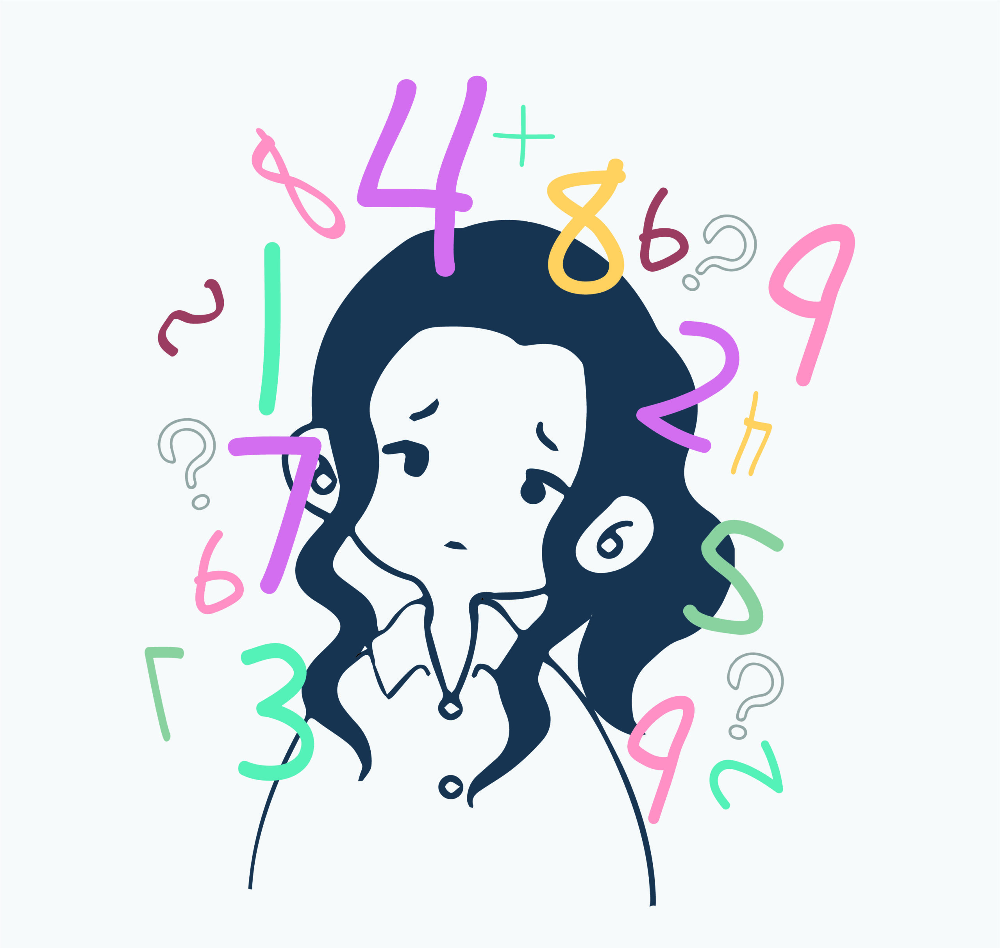
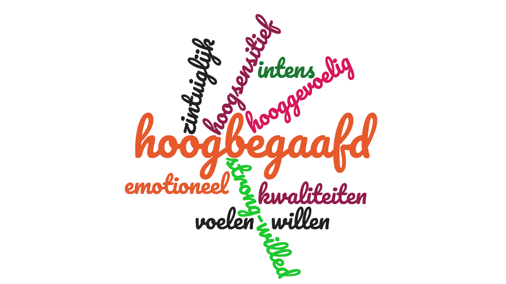

Quizzes
Quizzes
Quizzes
Quizzes
Leer voordat je de quiz maakt de theorie!

Wat is autisme?
Autisme is een neurologische ontwikkelingsstoornis die invloed heeft op communicatie, sociaal gedrag en informatieverwerking. Het wordt gedefinieerd als een spectrumstoornis, wat betekent dat het zich op verschillende manieren en in verschillende gradaties kan uiten bij mensen. Autisme beïnvloedt hoe iemand de wereld waarneemt en ermee omgaat, met kenmerken zoals moeite met sociale interactie, beperkte en repetitieve gedragingen, en soms over- of ondergevoeligheid voor prikkels. Autisme is geen tijdelijke aandoening en verdwijnt niet na de puberteit; het is een levenslange conditie.
Autisme Spectrum Stoornis (ASS)
De term Autisme Spectrum Stoornis (ASS) wordt gebruikt om te verwijzen naar de variatie in kenmerken en ernst van autisme. Vroeger werden verschillende termen zoals klassiek autisme, Asperger en PDD-NOS gebruikt, maar tegenwoordig vallen deze allemaal onder de noemer ASS. Dit spectrum erkent dat geen twee mensen met autisme precies hetzelfde zijn en dat de mate waarin symptomen optreden per individu kan verschillen.
Vroege signalen van autisme
De eerste tekenen van autisme kunnen vaak worden opgemerkt tussen de leeftijd van 2 en 3 jaar. Ouders of verzorgers kunnen opmerken dat een kind weinig oogcontact maakt, weinig interesse toont in sociale interactie of repetitieve gedragingen vertoont, zoals het fladderen van handen of het rangschikken van speelgoed op een specifieke manier. Sommige kinderen ontwikkelen taal later of hebben moeite met het begrijpen van sociale signalen.
Kenmerken van autisme
Hoewel de kenmerken van autisme per persoon verschillen, omvatten veelvoorkomende aspecten:
Speciale interesses
Veel mensen met autisme ontwikkelen intense interesses in specifieke onderwerpen of activiteiten. Dit kan variëren van wetenschap en geschiedenis tot treinroutes of muziek. Deze speciale interesses kunnen een bron van vreugde en expertise zijn, maar kunnen ook als obsessief worden ervaren door anderen.
Stimming
Stimming verwijst naar repetitieve bewegingen of geluiden, zoals wiegen, fladderen met handen of het herhalen van woorden of zinnen. Dit gedrag helpt vaak bij het reguleren van emoties, het verwerken van prikkels of het verminderen van stress.
Masking en camouflage
Masking of camouflage verwijst naar het bewuste of onbewuste aanpassen van gedrag om sociale normen te volgen. Dit wordt vaak gezien bij vrouwen en meisjes met autisme, die strategieën ontwikkelen om autistische kenmerken te verbergen. Dit kan echter erg vermoeiend zijn en leiden tot overprikkeling of uitputting.
Ondersteuning en begeleiding
Er zijn verschillende strategieën die kunnen helpen bij het ondersteunen van mensen met autisme. Enkele effectieve benaderingen zijn:
Misverstanden over autisme
Er bestaan veel misvattingen over autisme. Een van de meest voorkomende is dat alle mensen met autisme een bovengemiddelde intelligentie hebben of savantvaardigheden bezitten. In werkelijkheid varieert het intelligentieniveau sterk binnen het spectrum, net zoals bij de algemene bevolking. Een andere misvatting is dat autisme wordt veroorzaakt door vaccinaties; dit is door uitgebreid wetenschappelijk onderzoek volledig ontkracht.
Executive functioning en autisme
Executive functioning verwijst naar cognitieve vaardigheden zoals plannen, organiseren, taakinitiatie, tijdmanagement en impulscontrole. Veel mensen met autisme ervaren uitdagingen op dit gebied, wat het moeilijk kan maken om taken te voltooien, flexibel te denken of prioriteiten te stellen.
Theory of Mind
Theory of Mind (ToM) is het vermogen om te begrijpen dat anderen gedachten, gevoelens en intenties hebben die verschillen van de eigen ervaring. Mensen met autisme kunnen moeite hebben met het inschatten van andermans perspectieven, wat kan leiden tot uitdagingen in sociale situaties.
Neurodiversiteit en inclusie
Neurodiversiteit erkent dat neurologische verschillen zoals autisme geen defecten zijn, maar natuurlijke variaties binnen de menselijke bevolking. Door autisme te begrijpen en inclusieve omgevingen te creëren, kan de samenleving beter tegemoetkomen aan de behoeften en talenten van neurodivergente individuen. Dit kan leiden tot meer acceptatie, aanpassingen op de werkvloer en in het onderwijs, en een grotere waardering voor de unieke perspectieven die mensen met autisme kunnen bieden.
.jpg)
Wat is depressie?
Depressie is een veelvoorkomende, maar ernstige psychische aandoening die invloed heeft op hoe iemand zich voelt, denkt en handelt. Het wordt gekarakteriseerd door een langdurig gevoel van verdriet, hopeloosheid en verlies van interesse in activiteiten die voorheen plezierig waren. Depressie kan de dagelijkse functies beïnvloeden, zoals werken, slapen en sociale interacties, en kan leiden tot ernstige lichamelijke en emotionele problemen.
Soorten depressie
Er zijn verschillende vormen van depressie, waarvan de meest voorkomende de volgende zijn:
Symptomen van depressie
Depressie kan zich op verschillende manieren uiten, maar de meest voorkomende symptomen zijn:
Oorzaken van depressie
Er is niet één enkele oorzaak van depressie. Meestal is het een combinatie van genetische, biologische, psychologische en omgevingsfactoren. Enkele mogelijke oorzaken zijn:
Behandeling van depressie
Depressie is behandelbaar, en de behandeling kan variëren afhankelijk van de ernst van de symptomen. De belangrijkste behandelmethoden zijn:
Zelfhulp bij depressie
Naast professionele behandelingen zijn er enkele zelfhulpstrategieën die iemand met depressie kunnen ondersteunen:
Misverstanden over depressie
Er bestaan verschillende misvattingen over depressie, die het stigma rondom de aandoening kunnen vergroten. Enkele van deze misverstanden zijn:
Het belang van praten over depressie
Het openlijk praten over depressie is essentieel om het stigma te doorbreken en anderen te helpen die worstelen met hun geestelijke gezondheid. Door depressie bespreekbaar te maken, kunnen mensen zich ondersteund voelen en weten dat ze niet alleen zijn. Dit kan hen aanmoedigen om de nodige hulp te zoeken.

Wat is dyscalculie?
Dyscalculie is een neurologische leerstoornis die specifiek invloed heeft op het vermogen om met getallen en wiskundige concepten om te gaan. Mensen met dyscalculie hebben moeite met het begrijpen en toepassen van rekenvaardigheden, zoals optellen, aftrekken, vermenigvuldigen en delen. Daarnaast kunnen ze problemen ondervinden met het interpreteren van getallen, klokkijken, het omgaan met geld en het inschatten van hoeveelheden. Dyscalculie is niet hetzelfde als een algemeen gebrek aan rekenvaardigheid; het is een blijvende stoornis die losstaat van intelligentie en onderwijsniveau.
Oorzaken van dyscalculie
De precieze oorzaak van dyscalculie is nog niet volledig bekend, maar onderzoek suggereert dat het een neurologische basis heeft. Het wordt geassocieerd met afwijkingen in de hersengebieden die betrokken zijn bij numerieke verwerking en ruimtelijk inzicht. Dyscalculie kan erfelijk zijn, wat betekent dat het vaker voorkomt bij familieleden met dezelfde problematiek. Daarnaast kunnen andere factoren, zoals ontwikkelingsstoornissen of vroeggeboorte, bijdragen aan het ontstaan van dyscalculie.
Vroege signalen van dyscalculie
Dyscalculie kan zich op jonge leeftijd al manifesteren. Enkele vroege signalen bij kinderen zijn:
Kenmerken van dyscalculie
Hoewel de mate en de specifieke symptomen per persoon kunnen verschillen, zijn er enkele veelvoorkomende kenmerken van dyscalculie:
Dyscalculie en het dagelijks leven
Dyscalculie heeft niet alleen invloed op schoolprestaties, maar kan ook het dagelijks leven bemoeilijken. Mensen met dyscalculie kunnen bijvoorbeeld moeite hebben met:
Behandeling en ondersteuning
Er is geen genezing voor dyscalculie, maar er zijn verschillende strategieën en hulpmiddelen die kunnen helpen bij het omgaan met de uitdagingen:
Met de juiste ondersteuning en begeleiding kunnen mensen met dyscalculie manieren vinden om met hun beperkingen om te gaan en hun sterke punten te benutten.

Wat is hoogbegaafdheid?
Hoogbegaafdheid wordt gekarakteriseerd door een hoog IQ, vaak boven de 130, en het vermogen om snel en efficiënt te leren. Het gaat niet alleen om cognitieve vaardigheden, maar ook om creatief en innovatief denken, en het vermogen om complexe informatie te verwerken.
Kenmerken van hoogbegaafdheid
Hoogbegaafde mensen vertonen verschillende kenmerken, zoals:
Soorten hoogbegaafdheid
Hoogbegaafdheid komt voor in verschillende vormen, afhankelijk van de gebieden waarop een persoon uitblinkt:
Verschillen tussen hoogbegaafden en anderen
Hoogbegaafde mensen kunnen zich vaak anders voelen dan hun leeftijdsgenoten, wat soms leidt tot gevoelens van eenzaamheid of misverstanden. Dit komt doordat hun cognitieve en emotionele ontwikkeling sneller kan zijn dan die van hun peers, waardoor ze zich niet altijd begrepen voelen.
Onderwijs voor hoogbegaafde kinderen
Hoogbegaafde kinderen kunnen moeite hebben met de reguliere schoolcurricula, die vaak te makkelijk voor ze zijn. Differentiatie en speciaal onderwijs kunnen helpen om hen de uitdaging te bieden die ze nodig hebben om hun potentieel te realiseren.
Problemen die hoogbegaafde mensen ervaren
Hoogbegaafde mensen kunnen verschillende uitdagingen tegenkomen, zoals:
Oorzaken van hoogbegaafdheid
Hoogbegaafdheid kan deels genetisch zijn, hoewel omgevingsfactoren ook een rol kunnen spelen. Het is een combinatie van aanleg en omgeving die bepaalt hoe hoogbegaafd een persoon is.
Behandeling en ondersteuning voor hoogbegaafden
Hoogbegaafde mensen kunnen baat hebben bij professionele begeleiding om hun potentieel te benutten en hun uitdagingen aan te pakken. Dit kan variëren van onderwijsaanpassingen tot psychologische ondersteuning om hen te helpen omgaan met perfectionisme en sociale isolatie.
Zelfhulpstrategieën voor hoogbegaafden
Naast professionele hulp kunnen hoogbegaafde mensen zelf ook stappen ondernemen om hun welzijn te verbeteren:
Misverstanden over hoogbegaafdheid
Er bestaan veel misvattingen over hoogbegaafde mensen, zoals:
Het belang van ondersteuning voor hoogbegaafde mensen
Het bieden van passende ondersteuning aan hoogbegaafde mensen is essentieel voor hun welzijn en ontwikkeling. Dit kan hen helpen om zich te ontplooien en hun potentieel te realiseren, terwijl ze tegelijkertijd leren omgaan met de uitdagingen die gepaard gaan met hoogbegaafdheid.